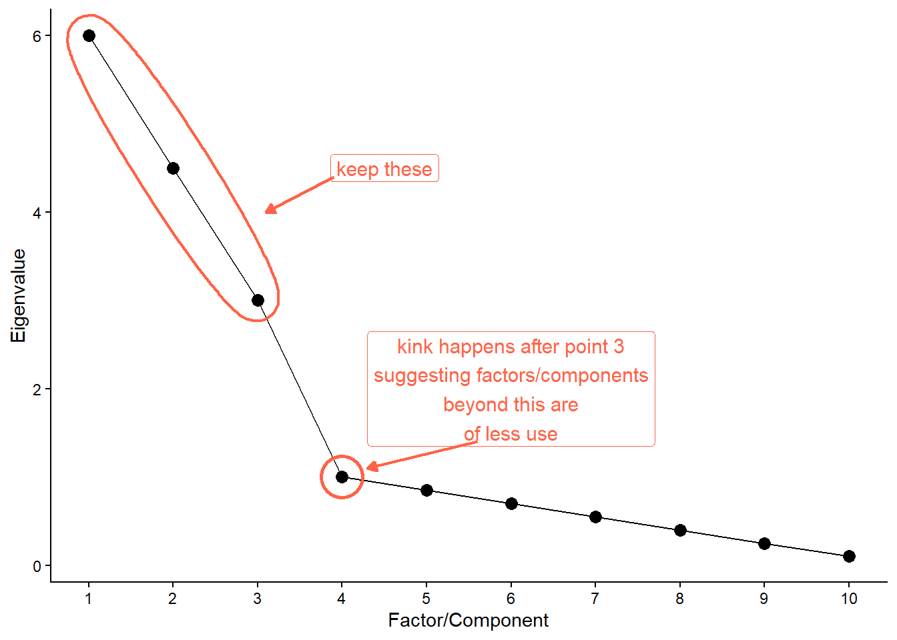
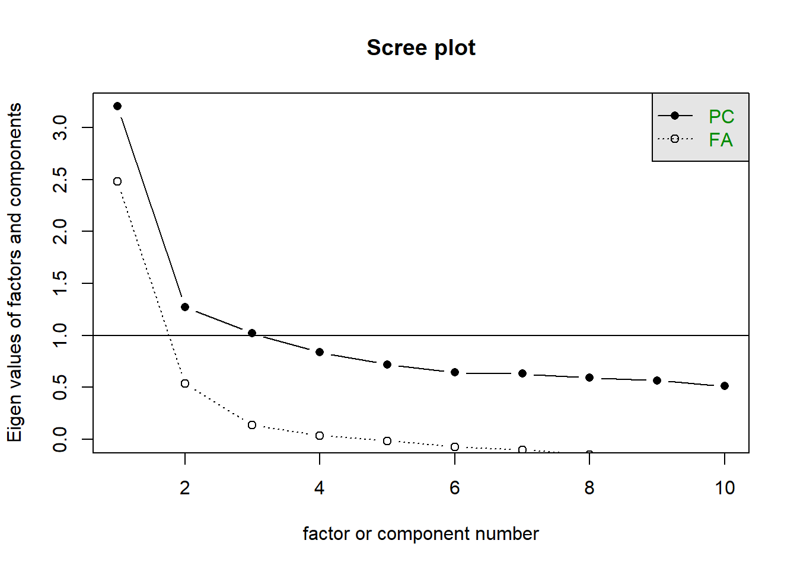
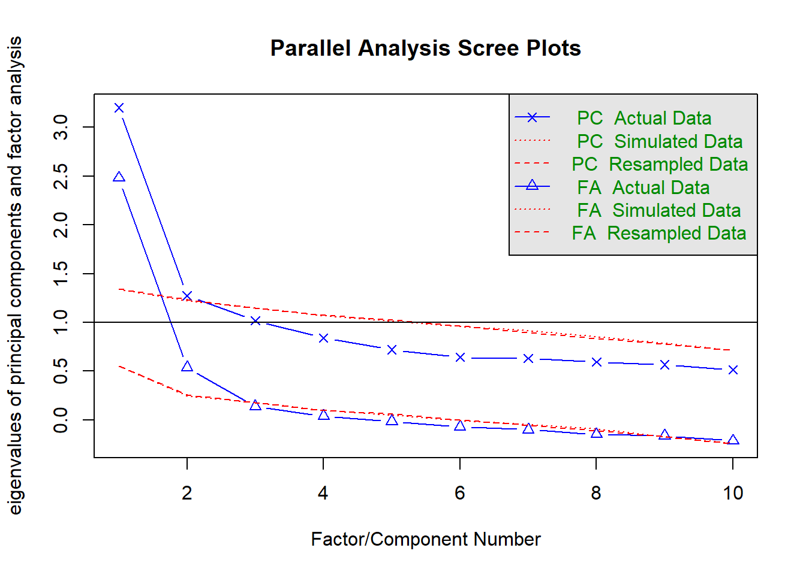

phdat <- read_csv("https://uoepsy.github.io/data/phoneaddiction.csv")Decide on the Number of Components/Factors
Overview
In both PCA and EFA, we will be faced with decisions of how many dimensions we want to keep.
It’s worth remembering, however, that the goals of PCA and EFA are slightly different.
For PCA, “how many components to keep” is ultimately a pragmatic decision, guided by:
- how many dimensions to do want to end up with?
- how much variance are we willing to sacrifice? (this will depend on the field)
- how many important dimensions do there appear to be?
For EFA, we are focusing on the latter: how many important dimensions do there appear to be? And we do not need a single answer - we want a range, and then we explore this question further by looking at the different models.
Data
Dataset: distressdata.csv
These data contain measurements on 220 individuals on various measures of exposure to distressing events:
How often do you…
- Q01: face hostile criticism from peers?
- Q02: experience rejection from close friends?
- Q03: deal with aggressive confrontations?
- Q04: face sudden, high-stakes project failure?
- Q05: receive negative performance evaluations?
- Q06: encounter unexpected, impossible deadlines?
- Q07: navigate intense office politics?
- Q08: deal with sudden financial instability?
- Q09: work in chaotic, unpredictable settings?
- Q10: face a loss of access to essential resources?
Dataset: phoneaddiction.csv
The dataset at https://uoepsy.github.io/data/phoneaddiction.csv comes from a (fake) study that is interested in developing a measure of “phone-attachment/addiction” - i.e., the idea of being overly attached to a phone.
We have a set of 10 statements (Table 1) that get at different aspects of this idea, and we asked 240 people to rate how much they agreed with each of the 10 statements on a 1-5 scale (1 = strongly disagree, 5 = strongly agree).
| variable | question |
|---|---|
| item1 | I often reach for my phone even when I don't have a specific reason to use it. |
| item2 | I feel a strong urge to check my phone frequently, even during meals or social interactions. |
| item3 | I spend a large portion of my day using my phone, often for more hours than I intend. |
| item4 | My phone use has interfered with my ability to complete tasks or responsibilities at school, work, or home. |
| item5 | When I cannot use my phone (e.g., no battery or no signal), I feel anxious or uncomfortable. |
| item6 | My phone use has negatively affected my sleep schedule, such as staying up late scrolling. |
| item7 | I find it difficult to avoid checking my phone immediately upon waking up or right before bed. |
| item8 | I often check my phone even in situations where it's distracting or socially inappropriate (e.g., meetings or classes). |
| item9 | I sometimes feel that others are overly concerned about my phone use in social situations. |
| item10 | I have tried to reduce my phone usage but find it challenging to do so. |
Vaccounted
For PCA, we might be guided to retain the number of components that keeps a certain proportion of the variance in the data.
To do this, we would run a PCA, and examine the Vaccounted section of the output.
library(psych)
phdat_pca <- principal(phdat, nfactors = 10,
rotate = "none")
phdat_pca$Vaccounted PC1 PC2 PC3 PC4 PC5 PC6 PC7 PC8 PC9
SS loadings 3.20 1.273 1.019 0.8385 0.720 0.6424 0.6310 0.5958 0.5657
Proportion Var 0.32 0.127 0.102 0.0838 0.072 0.0642 0.0631 0.0596 0.0566
Cumulative Var 0.32 0.447 0.549 0.6332 0.705 0.7694 0.8325 0.8921 0.9487
Proportion Explained 0.32 0.127 0.102 0.0838 0.072 0.0642 0.0631 0.0596 0.0566
Cumulative Proportion 0.32 0.447 0.549 0.6332 0.705 0.7694 0.8325 0.8921 0.9487
PC10
SS loadings 0.5131
Proportion Var 0.0513
Cumulative Var 1.0000
Proportion Explained 0.0513
Cumulative Proportion 1.0000It is the last row of this output (Cumulative Proportion) that we can use to decide how many components are required to keep e.g., 50/75/90% of the variance. In the example here, we can see that the first component captures 32%, the first two components capture 45%, the first three capture 55%, and so on..
There’s no set requirement for how much we want to keep. In some fields (like psychology) measurements are noisy, whereas in others we might expect to be able to preserve a lot of variance with only a few components.
Scree plot
Scree plots show the SSloadings for each component (PCA) or factor (EFA). A typical scree plot features higher variances for the initial components and quickly drops to small variances where the curve is almost flat. The flat part of the curve represents the noise components, which are not able to capture the main sources of variability in the system.
According to Scree plots, we should keep as many principal components up to where the “kink” (or “elbow”) in the plot occurs.
How to read a scree plot

Scree plots are subjective, and some are easier to read than others. In the plot below for our phone-addiction data, you could argue that the kink is either at the second or third point. This means we would keep either 1 or 2 dimensions.
The scree plot outputs these for both orthogonal components (PCA) and correlated factors (EFA). For PCA we should just look at the PC line, but for EFA we should consider both.
scree(phdat)
The horizontal line is an additional suggestion that we should keep all components for which the eigenvalue is >1. This is known as “Kaiser’s Criterion”
Parallel analysis
Rabbit Hole: What is parallel analysis?
Parallel analysis involves simulating lots of datasets of the same dimension but in which the variables are uncorrelated. For each of these simulations, a PCA is conducted on its correlation matrix, and the eigenvalues are extracted. We can then compare our eigenvalues from the PCA on our actual data to the average eigenvalues across these simulations. In theory, for uncorrelated variables, no components should explain more variance than any others, and eigenvalues should be equal to 1. In reality, variables are rarely truly uncorrelated, and so there will be slight variation in the magnitude of eigenvalues simply due to chance. The parallel analysis method suggests keeping those components for which the eigenvalues are greater than those from the simulations.
Parallel analysis can be conducted in R using the fa.parallel() function.
As with the scree plots, it presents this information for both orthogonal components (PCA) and correlated factors (EFA):
fa.parallel(phdat)
Parallel analysis suggests that the number of factors = 2 and the number of components = 2 NOTE: Parallel analysis will sometimes tend to over-extract (suggest too many components)
MAP
Rabbit Hole: What is MAP?
The Minimum Average Partial (MAP) test computes the partial correlation matrix (adjusting for and removing a component from the correlation matrix), sequentially partialling out each component. At each step, the partial correlations are squared and their average is computed.
At first, the components which are removed will be those that are most representative of the shared variance between 2+ variables, meaning that the “average squared partial correlation” will decrease. At some point in the process, the components being removed will begin represent variance that is specific to individual variables, meaning that the average squared partial correlation will increase.
The MAP method is to keep the number of components for which the average squared partial correlation is at the minimum.
We can conduct MAP in R using the VSS() function.
For PCA:
VSS(phdat,
rotate = "none", fm = "pc",
plot = FALSE)For EFA:
VSS(phdat,
rotate = "oblimin", fm = "ml",
plot = FALSE)There is a lot of other information in the output from VSS() too. We just want to focus on the map column, and the printed statement that tells us that the “Velicer MAP achieves a minimum” at a specific number of factors.
...
...
The Velicer MAP achieves a minimum of ??? with ???? factors
...
Statistics by number of factors
vss1 vss2 map dof ... ...
1 ... ... 0.030 .. ... ...
2 ... ... 0.038 .. ... ...
3 ... ... 0.052 .. ... ...
4 ... ... 0.087 .. ... ...
5 ... ... 0.119 .. ... ...
6 ... ... 0.179 .. ... ...
. ... ... ... .. ... ...
. ... ... ... .. ... ...
NOTE: The MAP method will sometimes tend to under-extract (suggest too few components)
Summary
| method | description |
|---|---|
| Variance Accounted For | Look at the proportion of the total variance explained by each extracted component/factor. Retain those needed to meet a predetermined cumulative threshold. Choice of threshold is arbitrary. |
| Scree Plot | Plot eigenvalues (variance explained by each component/factor) on the y-axis against the sequential component/factor number on the x-axis. Retain all those appearing before the kink/elbow (where the curve flattens out) Identifying the kink is a subjective judgement. |
| Parallel Analysis | Compare the eigenvalues (variance explained by each component/factor) from your observed data against those generated from random datasets of the same size. Retain components/factors where the observed eigenvalues are greater than the 95th percentile of the simulated ones. Slight tendency to over-extract (i.e. suggest too many). |
| Minimum Average Partial (MAP) | Sequentially remove components/factors and evaluate the resulting average partial correlation between variables. Stop at the step where the average reaches its minimum. Slight tendency to under-extract (i.e. suggest too few). |